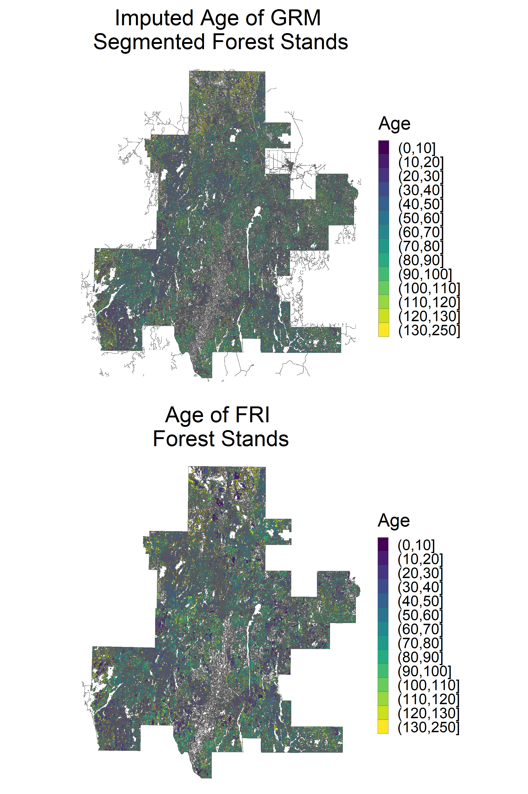
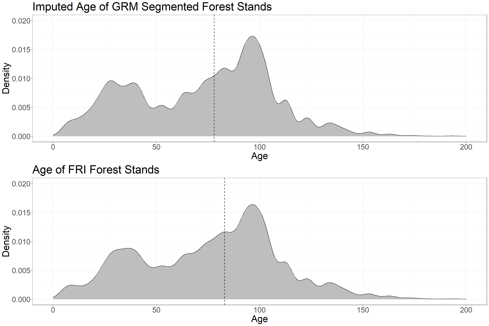
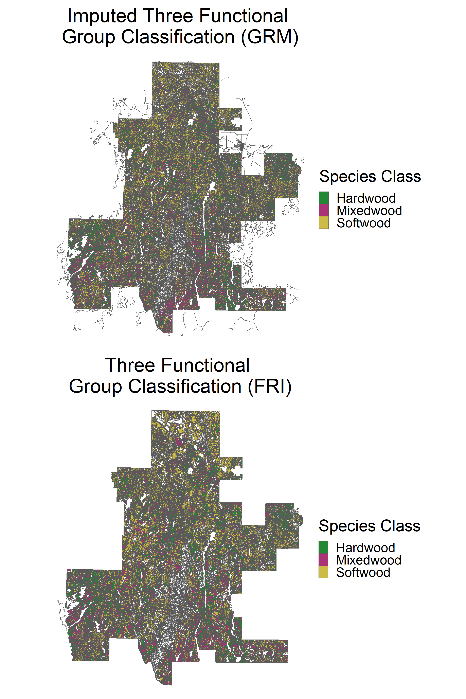
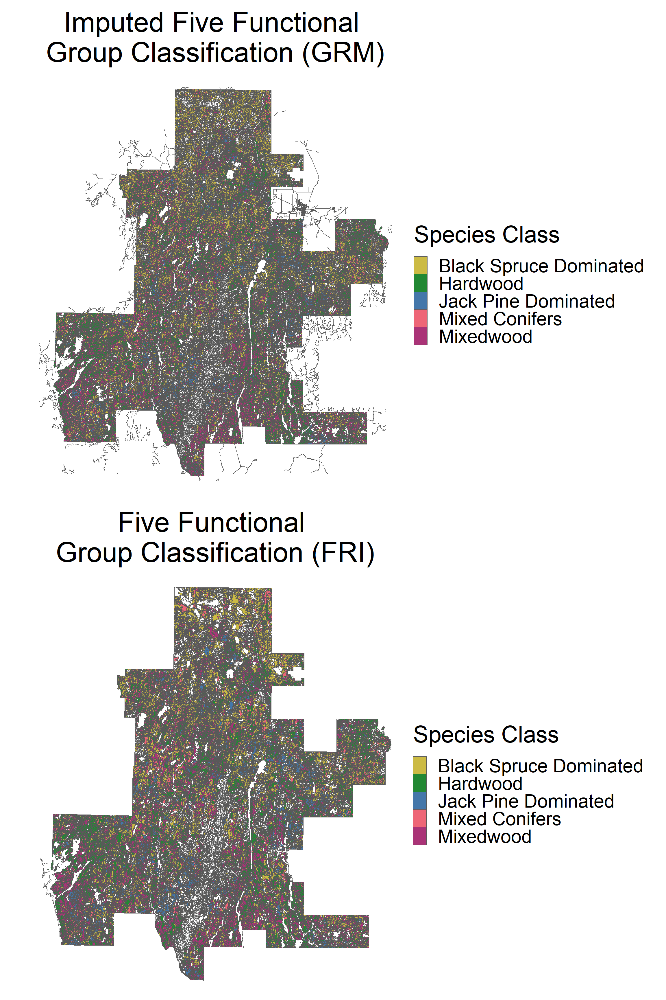
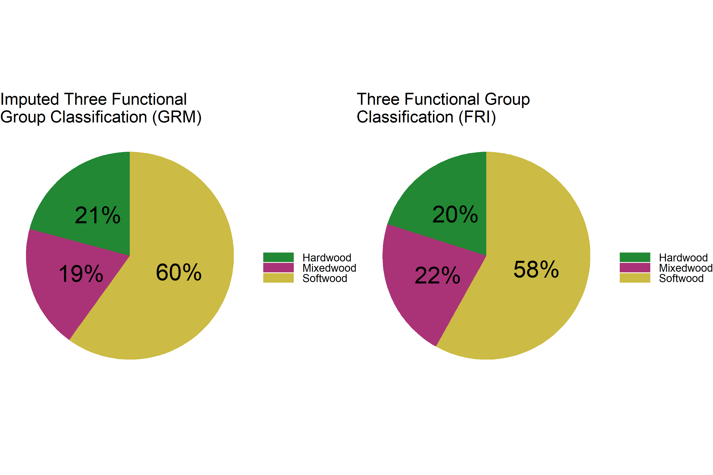
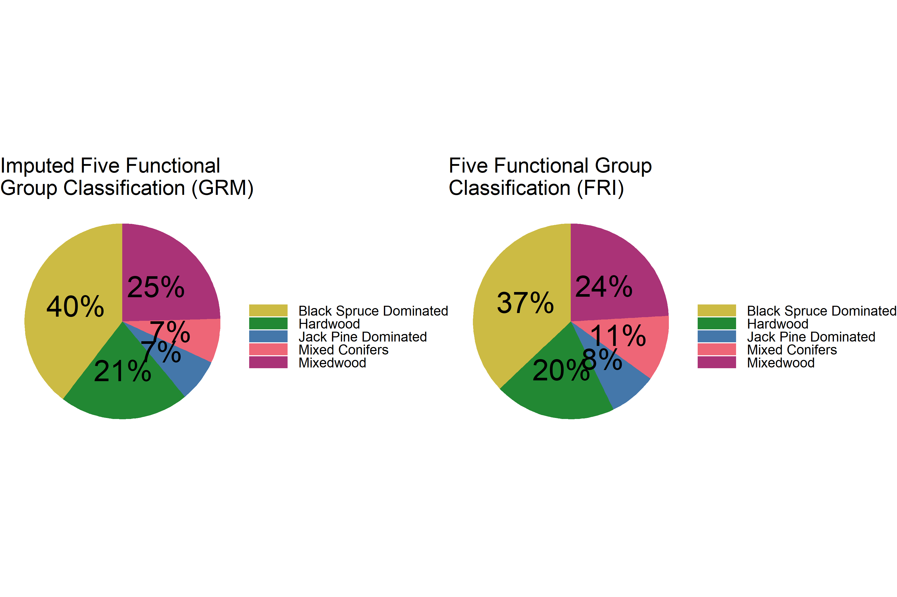

5 Imputation: Romeo Malette Forest
5.1 Introduction
After automatically delineating forest stands from ALS data, the second step of this project is to integrate the vast database of conventionally derived forest composition attributes with EFI structural attributes from ALS. EFIs contain forest attributes such as Lorey’s height, quadratic mean diameter at breast height, basal area, merchantable volume and above-ground biomass. Yet ALS is limited in its ability to accurately estimate additional important forest composition attributes such as species and forest stand age. Thus, although we can easily average ALS/EFI attributes using zonal statistics, we need a workflow to carry forward important interpreter-derived attributes from the conventional FRI. We achieve this through imputation.
k-nearest neighbor (kNN) imputation is a widely used technique to derive spatially contiguous forest attributes for inventory and monitoring purposes (Chirici et al., 2016; McRoberts et al., 2010). kNN is applicable when desired forest attributes (Y-variables) exist in a subset of all observations (reference observations), and are imputed into observations that are missing Y-variable values (target observations). The algorithm works by minimizing a distance function between variables without missing values across the dataset (X-variables), finding k-reference observations closest to a single target observation, and imputing Y-variable values from k-reference observations into the target observation. In this case X-variables are derived from ALS and optical spaceborne remote sensing due to the contiguous nature of the data. This technique is distribution-free, multivariate, and non-parametric (Eskelson et al., 2009). It is based on the premise that observations with similar X-variable values should also have similar desired forest attribute values (Y-variable values). Thus, X-variable selection can be more important than imputation method (Brosofske et al., 2014) and therefore an iterative performance analysis is used to aid in optimal variable selection. Since all attributes are imputed together from k-nearest neighbors, kNN imputation maintains the relationship between interpreter derived attributes (Coops et al., 2021).
In this example we will walk through the imputation of FRI age and species attributes into the forest stand polygons we generated using the GRM algorithm. As explained in Part 7 below (as well as in a forthcoming journal article), we undertook an iterative performance analysis to select the optimal X-variables to use to drive the imputation algorithm. We will not test different combinations of X-variables in this example, rather just use the optimal selection found for the RMF study area, focusing on the process of imputing age and species attributes into new polygons and assessing the distribution of attributes in relation to the conventional FRI.
5.2 Imputation Parameters
The kNN algorithm functions by minimizing the Euclidean distance, without weights, between n X-variables in a target observation (in this case a forested polygon) and k-reference observations. We tested combinations of n = 3/5/7 and use n = 7 in this example.
When k = 1, values from the nearest reference observation (X and Y-variables) are directly joined to the target observation. When k > 1, values from the nearest reference observations are averaged using either the mean (for numeric variables) or mode (for categorical values). All Y-variables are imputed together, maintaining the relationship between variables in the reference observations. We tested combinations of k = 1/3/5 and use k = 5 in this example as it produced optimal results. In general, larger values of k lead to higher performance but more averaging of estimated attributes, which decreases variability.
5.3 Data Requirements
The GRM segmentation workflow requires the following data layers, which are input into the algorithm at the beginning of the code:
- Gridded raster layers of the following ALS metrics and Sentinel-2 imagery, which are used as imputation X-variables as well as for polygon data screening:
Imputation X-variables:
- avg: Mean returns height > 1.3 m classified as vegetation
- rumple: Ratio of canopy outer surface area to ground surface area
- pcum8: Cumulative percentage of returns found in 80th percentile of returns height
- sd: Standard deviation of returns height > 1.3 m classified as vegetation
- b6: Cloud-free composite of Sentinel-2 red-edge 2 (band 6; 740 nm) surface reflectance
These five attributes comprise the optimal imputation X-variables from our performance analysis. The additional two variables used are the x and y coordinates of each polygon centroid, and are calculated automatically in the code. In the RMF, we found that these attributes derived directly from the ALS point cloud performed slightly better than modeled attributes from the EFI. Many of the ALS/EFI attributes are highly correlated and thus yield similar imputation results.
Variables for polygon data screening:
- p95: 95th percentile of returns height > 1.3 meters classified as vegetation
- cc: Canopy cover. Percentage of first returns > 2 meters classified as vegetation
We use these layers to screen FRI and GRM polygons to curate a set of polygons likely to be forested, since we do not want to impute attributes from/to polygons that are likely non-forested. We do not go into detail about how to pre-process ALS layers from the point cloud. These metrics were processed using the lidR package in R.
- Forest Resources Inventory polygons (shapefile)
The polygons need to have a “SPCOMP”, “YRORG”, and “POLYID” field, which are used in the code below.
- Generic Region Merging segmented polygons (shapefile)
The polygons generated in the segmentation step of this project.
- VLCE 2.0 Canada-wide Landcover data. Download here.
We use 2018 to match the year of aquisition of the ALS data.
All analyses are run in R using RStudio – so having a valid installation is necessary too.
5.4 Set Code and File Parameters
Now working in R, we will showcase a demo workflow, imputing age and species composition attributes from the FRI into GRM polygons in the Romeo Malette Forest (RMF). Although imputation can be carried out over the entire suite of FRI attributes, we focus on age and species for the purpose of this analysis. The first step is to install packages (if not already installed) and set the code and file parameters. The input file locations are referenced.
##################################
### INSTALL PACKAGES IF NEEDED ###
##################################
# install.packages(c('terra',
# 'tidyverse',
# 'exactextractr',
# 'sf',
# 'magrittr',
# 'gridExtra',
# 'RANN',
# 'reshape2',
# 'viridis',
# 'scales',
# 'janitor',
# 'kableExtra',
# 'knitr'))
# make sure to have OTB installed from here:
# https://www.orfeo-toolbox.org/
#####################
### LOAD PACKAGES ###
#####################
# load packages
library(terra)
library(tidyverse)
library(exactextractr)
library(sf)
library(magrittr)
library(gridExtra)
library(RANN)
library(reshape2)
library(viridis)
library(scales)
library(janitor)
library(kableExtra)
library(knitr)
####################################
### SET CODE AND FILE PARAMETERS ###
####################################
# set file names for ALS input variables
# first set the imputation X-variables
lidar_imp <- c('avg' = 'D:/ontario_inventory/romeo/RMF_EFI_layers/SPL100 metrics/RMF_20m_T130cm_avg.tif',
'rumple' = 'D:/ontario_inventory/romeo/SPL metrics/Z_METRICS_MOSAIC/individual/RMF_RUMPLE_MOSAIC_r_rumple.tif',
'pcum8' = 'D:/ontario_inventory/romeo/SPL metrics/Z_METRICS_MOSAIC/individual/RMF_Z_METRICS_MOSAIC_zpcum8.tif',
'sd' = 'D:/ontario_inventory/romeo/SPL metrics/Z_METRICS_MOSAIC/individual/RMF_Z_METRICS_MOSAIC_zsd.tif',
'b6' = 'D:/ontario_inventory/romeo/Sentinel/red_edge_2.tif')
# next set the data screening variables
lidar_scr <- c('p95' = 'D:/ontario_inventory/romeo/RMF_EFI_layers/SPL100 metrics/RMF_20m_T130cm_p95.tif',
'cc' = 'D:/ontario_inventory/romeo/RMF_EFI_layers/SPL100 metrics/RMF_20m_T130cm_2m_cov.tif')
# set file location of FRI polygons shape file
fri <- 'D:/ontario_inventory/romeo/RMF_EFI_layers/Polygons Inventory/RMF_PolygonForest.shp'
# set file location of GRM polygons shape file
grm <- 'C:/Users/bermane/Desktop/RMF/grm_10_01_05.shp'
# set output folder for files generated
# make sure no "/" at end of folder location!
out_dir <- 'C:/Users/bermane/Desktop/RMF'
# set file location of 2018 VLCE 2.0 landcover data
# using 2018 because it is the year of Romeo ALS acquisition
# can change based on ALS acquisition year
# download here:
# https://opendata.nfis.org/mapserver/nfis-change_eng.html
lc_f <- 'D:/ontario_inventory/VLCE/CA_forest_VLCE2_2018.tif'5.5 Pre-processing: Extract Variables into Polygons
The first step before running imputation is to extract all of the variables needed into each of the polygons. We take the median value of all pixels covered by each polygon, weighted by percent coverage. We also calculate the polygon centroid x and y coordinates (in UTM) and the age of the forest stand in 2018 (year of ALS acquisition) for FRI polygons only.
We start with the FRI polygons.
###########################################
### EXTRACT VARIABLES INTO FRI POLYGONS ###
###########################################
# load FRI polygons
poly <- vect(fri)
# convert to df
dat_fri <- as.data.frame(poly)
# cbind centroids to dat
dat_fri <- cbind(dat_fri, centroids(poly) %>% crds)
# combine all LiDAR and aux variables to extract
lidar_vars <- c(lidar_imp, lidar_scr)
# loop through LiDAR attributes to extract values
for (i in seq_along(lidar_vars)) {
# load LiDAR raster
lidar_ras <- rast(lidar_vars[i])
# project poly to crs of raster
poly_ras <- project(poly, lidar_ras)
# convert to sf
poly_ras <- st_as_sf(poly_ras)
#extract median values
vec <-
exact_extract(lidar_ras, poly_ras, 'median')
# aggregate into data frame
if(i == 1){
vec_df <- as.data.frame(vec)
} else{
vec_df <- cbind(vec_df, as.data.frame(vec))
}
}
# change column names of extracted attribute data frame
colnames(vec_df) <- names(lidar_vars)
# add LiDAR attributes to FRI polygon data frame
dat_fri <- cbind(dat_fri, vec_df)
# add 2018 age values
dat_fri$AGE2018 <- 2018 - dat_fri$YRORG
# check if main dir exists and create
if (dir.exists(out_dir) == F) {
dir.create(out_dir)
}
# check if temp dir exists and create
if (dir.exists(file.path(out_dir, 'temp')) == F) {
dir.create(file.path(out_dir, 'temp'))
}
# save extracted dataframe for fast rebooting
save(dat_fri, file = str_c(out_dir, '/temp/dat_fri_extr.RData'))Next we extract the same variables into GRM polygons.
###########################################
### EXTRACT VARIABLES INTO GRM POLYGONS ###
###########################################
# load GRM segmented polygons
poly <- vect(grm)
# reproject to match FRI polygons
poly <- project(poly, vect(fri))
# convert to df
dat_grm <- as.data.frame(poly)
# cbind centroids to dat
dat_grm <- cbind(dat_grm, centroids(poly) %>% crds)
# loop through LiDAR attributes to extract values
for (i in seq_along(lidar_vars)) {
# load LiDAR raster
lidar_ras <- rast(lidar_vars[i])
# project poly to crs of raster
poly_ras <- project(poly, lidar_ras)
# convert to sf
poly_ras <- st_as_sf(poly_ras)
#extract median values
vec <-
exact_extract(lidar_ras, poly_ras, 'median')
# aggregate into data frame
if(i == 1){
vec_df <- as.data.frame(vec)
} else{
vec_df <- cbind(vec_df, as.data.frame(vec))
}
}
# change column names of extracted attribute data frame
colnames(vec_df) <- names(lidar_vars)
# add LiDAR attributes to FRI polygon data frame
dat_grm <- cbind(dat_grm, vec_df)
# save extracted dataframe for fast rebooting
save(dat_grm, file = str_c(out_dir, '/temp/dat_grm_extr.RData'))5.6 Pre-processing: Calculate Species Attributes
The next step in pre-processing is to prepare the species attributes from the FRI. In the FRI, species type and percent composition are listed in a long string attribute “SPCOMP”. We break up this string into the following species attributes:
- First leading species
- Second leading species
- Three functional group classification (softwood, mixedwood, hardwood)
- Five functional group classification (jack pine dominated, black spruce dominated, mixed conifer, mixedwood, hardwood)
See Queinnec et al. (2022) and Woods et al. (2011) for the derivation of three and five functional group classification. Note these group classifications were developed for the RMF and may be less relevant in other areas (specifically the five functional group classification).
############################################
### FUNCTIONS FOR SPECIES CLASSIFICATION ###
############################################
# assign species name -- note this list was updated with all species in FSF FRI.
# It may need to be adjusted for other areas
assign_common_name <- function(sp_abbrev) {
sp_abbrev <- toupper(sp_abbrev)
dict <- data.frame(SB = "black spruce",
LA = "eastern larch",
BW = "white birch",
BF = "balsam fir",
CE = "cedar",
SW = "white spruce",
PT = "trembling aspen",
PJ = "jack pine",
PO = "poplar",
PB = "balsam poplar",
PR = "red pine",
PW = "white pine",
SX = "spruce",
MR = "red maple",
AB = "black ash",
BY = "yellow birch",
OR = 'red oak',
CW = 'eastern white cedar',
MH = 'hard maple',
HE = 'eastern hemlock',
BD = 'basswood',
CB = 'black cherry',
BE = 'american beech',
AW = 'white ash',
PL = 'largetooth aspen',
AG = 'red ash',
OW = 'white oak',
IW = 'ironwood',
OB = 'bur oak',
EW = 'white elm',
MS = 'silver maple',
PS = 'scots pine',
OH = 'other hardwoods',
BG = 'grey birch',
AL = 'alder',
SR = 'red spruce',
BB = 'blue beech',
MT = 'mountain maple',
MB = 'black maple',
OC = 'other conifers',
SN = 'norway spruce',
PE = 'silver poplar',
HI = 'hickory',
AX = 'ash') %>%
pivot_longer(everything(), names_to = "abb", values_to = "common")
dict$common[match(sp_abbrev, dict$abb)]
}
# assign either coniferous or deciduous
assign_type <- function(sp_common) {
sp_common <- tolower(sp_common)
ifelse(stringr::str_detect(sp_common, pattern = "pine|spruce|fir|cedar|larch|conifers|hemlock"), "Coniferous", "Deciduous")
}
####################################
### CALCULATE SPECIES ATTRIBUTES ###
####################################
# load fri
poly_fri <- st_read(fri)
# separate SPCOMP string into individual columns
poly_fri_for <- poly_fri %>%
st_drop_geometry() %>%
filter(POLYTYPE == "FOR") %>%
select(POLYID, POLYTYPE, SPCOMP) %>% # these need to match FRI attr fields
mutate(new_SP = str_match_all(SPCOMP, "[A-Z]{2}[ ]+[0-9]+")) %>%
unnest(new_SP) %>%
mutate(new_SP = as.character(new_SP)) %>%
separate(new_SP, into = c("SP", "PROP")) %>%
mutate(PROP = as.numeric(PROP),
Common = assign_common_name(SP),
sp_type = assign_type(Common))
# calculate polygon level species groups
# percent species type
poly_dom_type <- poly_fri_for %>%
group_by(POLYID) %>%
summarize(per_conif = sum(PROP[sp_type == "Coniferous"]),
per_decid = sum(PROP[sp_type == "Deciduous"]))
# leading species
poly_dom_sp <- poly_fri_for %>%
group_by(POLYID) %>%
slice_max(PROP, n = 1, with_ties = FALSE)
# combine type with leading species
poly_dom_sp_group <- inner_join(poly_dom_type, poly_dom_sp, by = "POLYID")
# calculate functional groups
poly_dom_sp_group <- poly_dom_sp_group %>%
mutate(SpeciesGroup1 = ifelse(PROP >= 70, Common,
ifelse(PROP < 70 & per_conif >= 70, "Mixed Coniferous",
ifelse(PROP < 70 & per_decid >= 70, "Mixed Deciduous", "Mixedwoods"))),
SpeciesGroup2 = ifelse(Common == "jack pine" & PROP >= 50 & per_conif >= 70, "Jack Pine Dominated", ifelse(
Common == "black spruce" & PROP >= 50 & per_conif >= 70, "Black Spruce Dominated", ifelse(
per_decid >= 70, "Hardwood", ifelse(
per_decid >= 30 & per_decid <= 70 & per_conif >= 30 & per_conif <= 70, "Mixedwood", "Mixed Conifers"
)))),
SpeciesGroup3 = ifelse(per_conif >= 70, "Softwood",
ifelse(per_decid >= 70, "Hardwood", "Mixedwood"))) %>%
mutate(across(.cols = starts_with("SpeciesGroup"), .fns = as.factor)) %>%
select(POLYID, SpeciesGroup2, SpeciesGroup3) %>%
rename(class5 = SpeciesGroup2, class3 = SpeciesGroup3)
# calculate leading and second species only
poly_fri_sp <- poly_fri %>%
st_drop_geometry() %>%
filter(POLYTYPE == "FOR") %>%
select(POLYID, POLYTYPE, SPCOMP) %>% # these need to match FRI attr fields
mutate(new_SP = str_match_all(SPCOMP, "[A-Z]{2}[ ]+[0-9]+")) %>%
unnest_wider(new_SP, names_sep = '') %>%
rename(new_SP = new_SP1) %>%
mutate(new_SP = as.character(new_SP),
new_SP2 = as.character(new_SP2)) %>%
separate(new_SP, into = c("SP", "PROP")) %>%
separate(new_SP2, into = c("SP2", "PROP2")) %>%
select(POLYID, SP, SP2)
# join functional groups with leading and second species
poly_dom_sp_group <- left_join(poly_dom_sp_group,
poly_fri_sp,
by = 'POLYID') %>%
rename(SP1 = SP)
# join to FRI extracted dataframe
dat_fri <- left_join(dat_fri,
poly_dom_sp_group,
by = 'POLYID')
# re-save extracted dataframe for fast rebooting
save(dat_fri, file = str_c(out_dir, '/temp/dat_fri_extr.RData'))5.7 Pre-processing: Forest Data Screening
FRI and GRM polygons delineate the entire landscape, not just forest stands. Since we are only interested in imputing age and species attributes in forest stands, it is important to screen the FRI and GRM datasets and remove polygons that do not fit certain data criteria representative of forest stands. We want to ensure:
- We only use FRI polygons for imputation that are forested, to ensure accurate and representative data points
- We only impute values into GRM polygons that are forested, since age and species attributes do not apply to non-forested polygons
The current data criteria being used is as follows:
- POLYTYPE == ‘FOR’ (for FRI polygons only)
- polygon >= 50% forested landcover
- p95 >= 5 meters (broad definition of ‘forest’)
- Canopy cover >= 50%
We first apply data screening to the FRI polygons.
#####################
### LOAD FRI DATA ###
#####################
# load FRI polygons
poly <- vect(fri)
# load FRI polygon data frame
load(str_c(out_dir, '/temp/dat_fri_extr.RData'))
#############################
### DATA SCREENING PART 1 ###
#############################
# remove all non-forested polygons
dat_fri <- filter(dat_fri, POLYTYPE == 'FOR')
# create smaller polygon set only FOR polytypes
poly_fri <- poly[poly$POLYTYPE == 'FOR']
#############################
### DATA SCREENING PART 2 ###
#############################
# polygon landcover > 50% forested
# load VLCE 2.0 landcover dataset from 2018
lc <- rast(lc_f)
# project poly to crs of raster
poly_lc <- project(poly_fri, lc)
# convert to sf
poly_lcsf <- st_as_sf(poly_lc)
# extract landcover values
lc_poly <- exact_extract(lc, poly_lcsf)
# set landcover class key with single forested class
lc_key_for <- c(`0` = 'NA',
`20` = 'Water',
`31` = 'Snow/Ice',
`32` = 'Rock/Rubble',
`33` = 'Exposed/Barren Land',
`40` = 'Bryoids',
`50` = 'Shrubland',
`80` = 'Wetland',
`81` = 'Forest',
`100` = 'Herbs',
`210` = 'Forest',
`220` = 'Forest',
`230` = 'Forest')
# find pixels with forest at least 50% of pixel
# apply over list
lc_dom_for <- sapply(lc_poly, function(x){
x$value <- recode(x$value, !!!lc_key_for)
x <- x %>% group_by(value) %>% summarize(sum = sum(coverage_fraction))
m <- x$value[which(x$sum == max(x$sum))]
if((length(m) == 1) & (m == 'Forest')[1]){
if(x$sum[x$value == m]/sum(x$sum) >= 0.5){
return('Yes')
}else{return('No')}
}else{return('No')}
})
# add new columns into dat
dat_fri <- dat_fri %>% add_column(dom_for = lc_dom_for)
# subset FRI data frame based on whether polygon dominated by forest
dat_fri_scr <- dat_fri %>% filter(dom_for == 'Yes')
#############################
### DATA SCREENING PART 3 ###
#############################
# require p95 >= 5
# require cc >= 50
dat_fri_scr %<>% filter(p95 >= 5, cc >= 50)
# save extracted data frame for fast rebooting
save(dat_fri_scr, file = str_c(out_dir, '/temp/dat_fri_scr.RData'))We next apply the data screening to the GRM polygons.
#####################
### LOAD GRM DATA ###
#####################
# load GRM polygon data frame
load(str_c(out_dir, '/temp/dat_grm_extr.RData'))
######################
### DATA SCREENING ###
######################
# Don't screen GRM polygons for POLYTYPE == FOR
# polygon landcover > 50% forested
# dom_for attribute already exists in GRM data from segmentation
# require p95 >= 5
# require cc >= 50
dat_grm_scr <- dat_grm %>% filter(dom_for == 'Yes',
p95 >= 5,
cc >= 50)
# save extracted data frame for fast rebooting
save(dat_grm_scr, file = str_c(out_dir, '/temp/dat_grm_scr.RData'))5.8 Execute Imputation Algorithm Over FRI Polygons ONLY
The goal of this imputation procedure is to estimate age and species composition in GRM segmented forest polygons. But it is also important to assess the performance of the algorithm. To best do this, we first conduct imputation over the FRI dataset ONLY. For each FRI polygon, we find the k-nearest neighbors (k=5), and calculate the age and species composition attributes to impute (a “leave one out” approach”). We can then compare the observed age and species composition of the polygon to the imputed values. Note we have to do this calculation on the FRI dataset alone because we do not have observed age and species composition values for the GRM segmented polygons. Also note that ALL attributes are imputed from the same k-nearest neighbors. The algorithm is not run for individual attributes.
For age, we report root mean squared difference (RMSD), mean absolute error (MAE) and mean bias error (MBE). RMSD was used in the performance analysis to assess results between algorithm runs and to decide upon an optimal model (see forthcoming journal article). MAE gives an average error of imputed age in years. MBE gives an indication of whether we are imputing younger or older ages on average.
For species composition, we report the percent of observed and imputed values that match (accuracy).
We also calculate performance metrics on the X-variables used in imputation: relative RMSD (RRMSD) and relative MBE (RMBE), calculated by dividing RMSD and RMBE by the mean value of each variable and multiplying by 100. RRMSD and RMBE give a percent error that can be compared across variables and when variables have difficult to interpret units, such as several of the ALS metrics used in imputation.
First we define the functions needed for imputation.
######################################################
### FUNCTIONS TO RUN K NEAREST NEIGHBOR IMPUTATION ###
######################################################
# create mode function
getmode <- function(v) {
uniqv <- unique(v)
uniqv[which.max(tabulate(match(v, uniqv)))]
}
# create rmsd function
rmsd <- function(obs, est){
sqrt(mean((est - obs) ^ 2))
}
# create rrmsd function
rrmsd <- function(obs, est){
sqrt(mean((est - obs) ^ 2)) / mean(obs) * 100
}
# create mae function
mae <- function(obs, est){
mean(abs(est - obs))
}
# create mbe function
mbe <- function(obs, est){
mean(est - obs)
}
# create rmbe function
rmbe <- function(obs, est){
mean(est - obs) / mean(obs) * 100
}
# create knn function to output performance results
run_knn_fri <- function(dat, vars, k) {
# subset data
dat_nn <- dat %>% select(all_of(vars))
# scale for nn computation
dat_nn_scaled <- dat_nn %>% scale
# run nearest neighbor
nn <- nn2(dat_nn_scaled, dat_nn_scaled, k = k + 1)
# get nn indices
nni <- nn[[1]][, 2:(k + 1)]
# add vars to tibble
# take mean/mode if k > 1
if(k > 1){
for(i in seq_along(vars)){
if(i == 1){
nn_tab <- tibble(!!vars[i] := dat_nn[,i],
!!str_c(vars[i], '_nn') := apply(nni, MARGIN = 1, FUN = function(x){
mean(dat_nn[x, i])
}))
}else{
nn_tab %<>% mutate(!!vars[i] := dat_nn[,i],
!!str_c(vars[i], '_nn') := apply(nni, MARGIN = 1, FUN = function(x){
mean(dat_nn[x, i])
}))
}
}
# add target vars to tibble
nn_tab %<>% mutate(age = dat$AGE2018,
sp1 = dat$SP1,
sp2 = dat$SP2,
class5 = dat$class5,
class3 = dat$class3,
age_nn = apply(nni, MARGIN = 1, FUN = function(x){
mean(dat$AGE2018[x])
}),
sp1_nn = apply(nni, MARGIN = 1, FUN = function(x){
getmode(dat$SP1[x])
}),
sp2_nn = apply(nni, MARGIN = 1, FUN = function(x){
getmode(dat$SP2[x])
}),
class5_nn = apply(nni, MARGIN = 1, FUN = function(x){
getmode(dat$class5[x])
}),
class3_nn = apply(nni, MARGIN = 1, FUN = function(x){
getmode(dat$class3[x])
}))
}
# take direct nn if k == 1
if(k == 1){
for(i in seq_along(vars)){
if(i == 1){
nn_tab <- tibble(!!vars[i] := dat_nn[,i],
!!str_c(vars[i], '_nn') := dat_nn[nn[[1]][,2],i])
}else{
nn_tab %<>% mutate(!!vars[i] := dat_nn[,i],
!!str_c(vars[i], '_nn') := dat_nn[nn[[1]][,2],i])
}
}
# add target vars to tibble
nn_tab %<>% mutate(age = dat$AGE2018,
sp1 = dat$SP1,
sp2 = dat$SP2,
class5 = dat$class5,
class3 = dat$class3,
age_nn = dat$AGE2018[nn[[1]][,2]],
sp1_nn = dat$SP1[nn[[1]][,2]],
sp2_nn = dat$SP2[nn[[1]][,2]],
class5_nn = dat$class5[nn[[1]][,2]],
class3_nn = dat$class3[nn[[1]][,2]])
}
# calculate fit metrics for vars
for(i in seq_along(vars)){
if(i == 1){
perform_df <- tibble(variable = vars[i],
metric = c('rrmsd (%)', 'rmbe (%)'),
value = c(rrmsd(pull(nn_tab, vars[i]),
pull(nn_tab, str_c(vars[i], '_nn'))),
rmbe(pull(nn_tab, vars[i]),
pull(nn_tab, str_c(vars[i], '_nn')))))
}else{
perform_df %<>% add_row(variable = vars[i],
metric = c('rrmsd (%)', 'rmbe (%)'),
value = c(rrmsd(pull(nn_tab, vars[i]),
pull(nn_tab, str_c(vars[i], '_nn'))),
rmbe(pull(nn_tab, vars[i]),
pull(nn_tab, str_c(vars[i], '_nn')))))
}
}
# calculate metrics for age
perform_df %<>% add_row(variable = 'age',
metric = c('rmsd (yrs)', 'mbe (yrs)', 'mae (yrs)'),
value = c(rmsd(nn_tab$age, nn_tab$age_nn),
mbe(nn_tab$age, nn_tab$age_nn),
mae(nn_tab$age, nn_tab$age_nn)))
# calculate SP1 accuracy
# create df of SP1
sp1 <- data.frame(obs = nn_tab$sp1,
est = nn_tab$sp1_nn)
# create column of match or not
sp1$match <- sp1$obs == sp1$est
# add total percent of matching SP1 to perform_df
perform_df %<>% add_row(variable = 'leading species',
metric = 'accuracy (%)',
value = NROW(sp1[sp1$match == T,]) /
NROW(sp1) * 100)
# calculate SP2 accuracy
# create df of SP2
sp2 <- data.frame(obs = nn_tab$sp2,
est = nn_tab$sp2_nn)
# create column of match or not
sp2$match <- sp2$obs == sp2$est
# add total percent of matching SP2 to perform_df
perform_df %<>% add_row(variable = 'second species',
metric = 'accuracy (%)',
value = NROW(sp2[sp2$match == T,]) /
NROW(sp2) * 100)
# calculate class3 accuracy
# create df of class3
class3 <- data.frame(obs = nn_tab$class3,
est = nn_tab$class3_nn)
# create column of match or not
class3$match <- class3$obs == class3$est
# add total percent of matching class3 to perform_df
perform_df %<>% add_row(variable = 'three func group class',
metric = 'accuracy (%)',
value = NROW(class3[class3$match == T,]) /
NROW(class3) * 100)
# calculate class5 accuracy
# create df of class5
class5 <- data.frame(obs = nn_tab$class5,
est = nn_tab$class5_nn)
# create column of match or not
class5$match <- class5$obs == class5$est
# add total percent of matching class5 to perform_df
perform_df %<>% add_row(variable = 'five func group class',
metric = 'accuracy (%)',
value = NROW(class5[class5$match == T,]) /
NROW(class5) * 100)
# return df
return(perform_df)
}
# create knn function to output imputed vs. observed table
run_knn_fri_table <- function(dat, vars, k) {
# subset data
dat_nn <- dat %>% select(all_of(vars))
# scale for nn computation
dat_nn_scaled <- dat_nn %>% scale
# run nearest neighbor
nn <- nn2(dat_nn_scaled, dat_nn_scaled, k = k + 1)
# get nn indices
nni <- nn[[1]][, 2:(k + 1)]
# add vars to tibble
# take mean/mode if k > 1
if(k > 1){
for(i in seq_along(vars)){
if(i == 1){
nn_tab <- tibble(!!vars[i] := dat_nn[,i],
!!str_c(vars[i], '_nn') := apply(nni, MARGIN = 1, FUN = function(x){
mean(dat_nn[x, i])
}))
}else{
nn_tab %<>% mutate(!!vars[i] := dat_nn[,i],
!!str_c(vars[i], '_nn') := apply(nni, MARGIN = 1, FUN = function(x){
mean(dat_nn[x, i])
}))
}
}
# add target vars to tibble
nn_tab %<>% mutate(age = dat$AGE2018,
sp1 = dat$SP1,
sp2 = dat$SP2,
class5 = dat$class5,
class3 = dat$class3,
age_nn = apply(nni, MARGIN = 1, FUN = function(x){
mean(dat$AGE2018[x])
}),
sp1_nn = apply(nni, MARGIN = 1, FUN = function(x){
getmode(dat$SP1[x])
}),
sp2_nn = apply(nni, MARGIN = 1, FUN = function(x){
getmode(dat$SP2[x])
}),
class5_nn = apply(nni, MARGIN = 1, FUN = function(x){
getmode(dat$class5[x])
}),
class3_nn = apply(nni, MARGIN = 1, FUN = function(x){
getmode(dat$class3[x])
}))
}
# take direct nn if k == 1
if(k == 1){
for(i in seq_along(vars)){
if(i == 1){
nn_tab <- tibble(!!vars[i] := dat_nn[,i],
!!str_c(vars[i], '_nn') := dat_nn[nn[[1]][,2],i])
}else{
nn_tab %<>% mutate(!!vars[i] := dat_nn[,i],
!!str_c(vars[i], '_nn') := dat_nn[nn[[1]][,2],i])
}
}
# add target vars to tibble
nn_tab %<>% mutate(age = dat$AGE2018,
sp1 = dat$SP1,
sp2 = dat$SP2,
class5 = dat$class5,
class3 = dat$class3,
age_nn = dat$AGE2018[nn[[1]][,2]],
sp1_nn = dat$SP1[nn[[1]][,2]],
sp2_nn = dat$SP2[nn[[1]][,2]],
class5_nn = dat$class5[nn[[1]][,2]],
class3_nn = dat$class3[nn[[1]][,2]])
}
# return nn table
return(nn_tab)
}Then we run imputation on the FRI dataset using the functions defined above.
########################################################
### RUN KNN IMPUTATION USING OPTIMAL MODEL VARIABLES ###
########################################################
# load FRI screened polygons
load(str_c(out_dir, '/temp/dat_fri_scr.RData'))
# subset only the attributes we need from the screened FRI polygons
dat_fri_scr %<>% select(POLYID, AGE2018, avg,
rumple, pcum8, sd,
b6, x, y, SP1, SP2, class3, class5)
# remove any polygons with missing values
# in imputation X-variables
dat_fri_scr <- left_join(dat_fri_scr %>% select(POLYID, AGE2018, avg,
rumple, pcum8, sd,
b6, x, y) %>% na.omit,
dat_fri_scr)
# create vector of X-variables for imputation
vars <- c('avg', 'rumple',
'pcum8', 'sd',
'b6', 'x', 'y')
# run_knn_fri function to get performance results
perf <- run_knn_fri(dat_fri_scr, vars, k = 5)
# run_knn_fri function to get imputed vs. observed values
nn_tab <- run_knn_fri_table(dat_fri_scr, vars, k = 5)5.9 Results: Imputation over FRI
For the imputation over FRI we don’t generate output polygons, just the performance metrics listed above so we can assess the performance of the imputation.
Having run the imputation function, we clean the output data and display results.
# round values
perf %<>% mutate(value = round(value, 2))
# factor variable and metric categories to order
perf %<>% mutate(variable = factor(variable, levels = c('age', 'leading species',
'second species', 'three func group class',
'five func group class', vars))) %>%
mutate(metric = factor(metric, levels = c('rmsd (yrs)', 'mbe (yrs)', 'mae (yrs)', 'accuracy (%)', 'rrmsd (%)', 'rmbe (%)')))
# cast df
perf_cast <- dcast(perf, variable ~ metric)
# remove x and y
perf_cast %<>% filter(!(variable %in% c('x', 'y')))
# set NA to blank
perf_cast[is.na(perf_cast)] <- ''
# display results
knitr::kable(perf_cast, caption = "Imputation Performance of FRI Forest Stand Polygons", label = NA)| variable | rmsd (yrs) | mbe (yrs) | mae (yrs) | accuracy (%) | rrmsd (%) | rmbe (%) |
|---|---|---|---|---|---|---|
| age | 23.31 | -0.14 | 16.06 | |||
| leading species | 65.46 | |||||
| second species | 37.62 | |||||
| three func group class | 72.34 | |||||
| five func group class | 60.73 | |||||
| avg | 3.6 | 0 | ||||
| rumple | 2.54 | 0.01 | ||||
| pcum8 | 0.9 | 0.13 | ||||
| sd | 3.88 | -0.33 | ||||
| b6 | 2.15 | -0.1 |
The mean bias error (MBE) of age is -0.14 years, indicating the imputed estimates of age are not skewed toward younger or older values. The mean absolute error (MAE) of age is 16.06 years, which is the average difference between the observed and imputed value.
Accuracy of leading species classification is 65.46%, and a much lower 37.62% for second leading species. Three and five functional group classification have respective accuracies of 72.34% and 60.73%.
Relative root mean squared difference (RRMSD) of the imputation attributes (avg, sd, rumple, zpcum8, and red_edge_2) is below 4% for all attributes. These are low values, which demonstrate that the imputation algorithm is finding optimal matches within the database of available FRI polygons.
Relative mean bias error (RMBE) of the imputation attributes is less than 1%, meaning that the nearest neighbor selections are not skewed toward positive or negative values of these attributes.
RRMSD/RMBE are not calculated for x and y because the coordinates do not represent a value scale.
We can also generate detailed confusion matrices of the imputed vs. observed species composition.
Three functional group classification:
# calculate 3 func group confusion matrix
# build accuracy table
accmat <- table("pred" = nn_tab$class3_nn, "ref" = nn_tab$class3)
# UA
ua <- diag(accmat) / rowSums(accmat) * 100
# PA
pa <- diag(accmat) / colSums(accmat) * 100
# OA
oa <- sum(diag(accmat)) / sum(accmat) * 100
# build confusion matrix
accmat_ext <- addmargins(accmat)
accmat_ext <- rbind(accmat_ext, "Users" = c(pa, NA))
accmat_ext <- cbind(accmat_ext, "Producers" = c(ua, NA, oa))
accmat_ext <- round(accmat_ext, 2)
dimnames(accmat_ext) <- list("Imputed" = colnames(accmat_ext),
"Observed" = rownames(accmat_ext))
class(accmat_ext) <- "table"
# display results
knitr::kable(accmat_ext %>% round, caption = "Confusion matrix of imputed vs. observed three functional group classification over FRI polygons. Rows are imputed values and columns are observed values.", label = NA)| Hardwood | Mixedwood | Softwood | Sum | Users | |
|---|---|---|---|---|---|
| Hardwood | 6651 | 2448 | 1044 | 10143 | 66 |
| Mixedwood | 2277 | 4426 | 2697 | 9400 | 47 |
| Softwood | 1397 | 4363 | 26134 | 31894 | 82 |
| Sum | 10325 | 11237 | 29875 | 51437 | NA |
| Producers | 64 | 39 | 87 | NA | 72 |
Five functional group classification:
# calculate 5 func group confusion matrix
# build accuracy table
accmat <- table("pred" = nn_tab$class5_nn, "ref" = nn_tab$class5)
# UA
ua <- diag(accmat) / rowSums(accmat) * 100
# PA
pa <- diag(accmat) / colSums(accmat) * 100
# OA
oa <- sum(diag(accmat)) / sum(accmat) * 100
# build confusion matrix
accmat_ext <- addmargins(accmat)
accmat_ext <- rbind(accmat_ext, "Users" = c(pa, NA))
accmat_ext <- cbind(accmat_ext, "Producers" = c(ua, NA, oa))
accmat_ext <- round(accmat_ext, 2)
dimnames(accmat_ext) <- list("Imputed" = colnames(accmat_ext),
"Observed" = rownames(accmat_ext))
class(accmat_ext) <- "table"
# display results
knitr::kable(accmat_ext %>% round, caption = "Confusion matrix of imputed vs. observed five functional group classification over FRI polygons. Rows are imputed values and columns are observed values.", label = NA)| Black Spruce Dominated | Hardwood | Jack Pine Dominated | Mixed Conifers | Mixedwood | Sum | Users | |
|---|---|---|---|---|---|---|---|
| Black Spruce Dominated | 14832 | 575 | 618 | 2623 | 2664 | 21312 | 70 |
| Hardwood | 480 | 6744 | 323 | 283 | 2618 | 10448 | 65 |
| Jack Pine Dominated | 366 | 218 | 2481 | 178 | 492 | 3735 | 66 |
| Mixed Conifers | 1325 | 186 | 112 | 1326 | 765 | 3714 | 36 |
| Mixedwood | 2064 | 2602 | 539 | 1169 | 5854 | 12228 | 48 |
| Sum | 19067 | 10325 | 4073 | 5579 | 12393 | 51437 | NA |
| Producers | 78 | 65 | 61 | 24 | 47 | NA | 61 |
Leading species:
# calculate leading species confusion matrix
# create df of sp1
sp1 <- data.frame(obs = nn_tab$sp1 %>% as.factor,
est = nn_tab$sp1_nn %>% as.factor)
# make estimate levels match obs levels
levels(sp1$est) <- c(levels(sp1$est), levels(sp1$obs)[!(levels(sp1$obs) %in% levels(sp1$est))])
sp1$est <- factor(sp1$est, levels = levels(sp1$obs))
# create column of match or not
sp1$match <- sp1$obs == sp1$est
# build accuracy table
accmat <- table("pred" = sp1$est, "ref" = sp1$obs)
# UA
ua <- diag(accmat) / rowSums(accmat) * 100
# PA
pa <- diag(accmat) / colSums(accmat) * 100
# OA
oa <- sum(diag(accmat)) / sum(accmat) * 100
# build confusion matrix
accmat_ext <- addmargins(accmat)
accmat_ext <- rbind(accmat_ext, "Users" = c(pa, NA))
accmat_ext <- cbind(accmat_ext, "Producers" = c(ua, NA, oa))
accmat_ext <- round(accmat_ext, 2)
dimnames(accmat_ext) <- list("Imputed" = colnames(accmat_ext),
"Observed" = rownames(accmat_ext))
class(accmat_ext) <- "table"
# display results
knitr::kable(accmat_ext %>% round, caption = "Confusion matrix of imputed vs. observed leading species over FRI polygons. Rows are imputed values and columns are observed values.", label = NA) %>%
kable_styling(latex_options="scale_down")| AB | BF | BW | CE | LA | MR | PB | PJ | PO | PR | PT | PW | SB | SW | SX | Sum | Users | |
|---|---|---|---|---|---|---|---|---|---|---|---|---|---|---|---|---|---|
| AB | 6 | 0 | 4 | 0 | 0 | 0 | 0 | 0 | 0 | 0 | 0 | 0 | 2 | 0 | 0 | 12 | 50 |
| BF | 0 | 31 | 35 | 11 | 6 | 0 | 0 | 7 | 15 | 1 | 7 | 0 | 67 | 12 | 0 | 192 | 16 |
| BW | 10 | 86 | 4248 | 320 | 33 | 0 | 15 | 228 | 401 | 1 | 1165 | 26 | 1333 | 166 | 0 | 8032 | 53 |
| CE | 0 | 21 | 166 | 428 | 43 | 0 | 0 | 18 | 18 | 0 | 45 | 0 | 471 | 10 | 1 | 1221 | 35 |
| LA | 0 | 2 | 16 | 19 | 57 | 0 | 0 | 11 | 9 | 0 | 15 | 0 | 165 | 5 | 0 | 299 | 19 |
| MR | 0 | 0 | 0 | 0 | 0 | 0 | 0 | 0 | 0 | 0 | 0 | 0 | 0 | 0 | 0 | 0 | NaN |
| PB | 0 | 1 | 5 | 0 | 0 | 0 | 4 | 0 | 2 | 0 | 9 | 0 | 4 | 2 | 0 | 27 | 15 |
| PJ | 2 | 8 | 185 | 18 | 43 | 0 | 0 | 3111 | 92 | 6 | 449 | 1 | 630 | 46 | 0 | 4591 | 68 |
| PO | 5 | 21 | 248 | 17 | 16 | 0 | 5 | 88 | 876 | 1 | 290 | 4 | 155 | 21 | 0 | 1747 | 50 |
| PR | 0 | 0 | 1 | 0 | 0 | 0 | 0 | 0 | 1 | 0 | 0 | 0 | 2 | 0 | 0 | 4 | 0 |
| PT | 5 | 28 | 1042 | 64 | 23 | 0 | 52 | 443 | 346 | 1 | 3594 | 7 | 715 | 69 | 0 | 6389 | 56 |
| PW | 0 | 0 | 1 | 0 | 0 | 0 | 0 | 0 | 0 | 0 | 0 | 2 | 1 | 1 | 0 | 5 | 40 |
| SB | 6 | 393 | 1815 | 1316 | 759 | 1 | 19 | 1155 | 277 | 2 | 1106 | 14 | 21259 | 506 | 1 | 28629 | 74 |
| SW | 0 | 10 | 50 | 3 | 4 | 0 | 3 | 22 | 10 | 0 | 33 | 2 | 96 | 56 | 0 | 289 | 19 |
| SX | 0 | 0 | 0 | 0 | 0 | 0 | 0 | 0 | 0 | 0 | 0 | 0 | 0 | 0 | 0 | 0 | NaN |
| Sum | 34 | 601 | 7816 | 2196 | 984 | 1 | 98 | 5083 | 2047 | 12 | 6713 | 56 | 24900 | 894 | 2 | 51437 | NA |
| Producers | 18 | 5 | 54 | 19 | 6 | 0 | 4 | 61 | 43 | 0 | 54 | 4 | 85 | 6 | 0 | NA | 65 |
5.10 Execute Imputation Algorithm From FRI to GRM Polygons
The last step is to run the imputation between the screened FRI polygons and the GRM segmented polygons. For each GRM segmented polygon, the k-nearest neighbors in the FRI data are found and used to impute age and species composition. Note we do not conduct imputation on all the GRM segmented polygons, but only the forested polygons that passed through the data screening filters.
Although we cannot directly assess the error of age and species composition when imputing into the GRM segmented polygons, we can still assess the fit of the variables used in the imputation.
We can also review maps and distributions comparing FRI age/species composition against the same attributes imputed into GRM segmented polygons.
First we execute the imputation algorithm itself. Since there was no iterative performance analysis conducted on the FRI to GRM imputation, we do not define an imputation function, rather just run the algorithm in line.
# load GRM screened polygons
load(str_c(out_dir, '/temp/dat_grm_scr.RData'))
# create data frame for grm and fri metrics used in imputation
dat_grm_imp <- dat_grm_scr %>% select(id, avg,
rumple, pcum8, sd,
b6, x, y) %>% na.omit
dat_fri_imp <- dat_fri_scr %>% select(avg,
rumple, pcum8, sd,
b6, x, y) %>% na.omit
# need to combine and scale all values together then separate again
dat_comb_scaled <- rbind(dat_grm_imp %>% select(-id),
dat_fri_imp) %>% scale
dat_grm_scaled <- dat_comb_scaled[1:NROW(dat_grm_imp),]
dat_fri_scaled <- dat_comb_scaled[(NROW(dat_grm_imp)+1):(NROW(dat_grm_imp)+NROW(dat_fri_imp)),]
# run nearest neighbor imputation k = 5
nn <- nn2(dat_fri_scaled, dat_grm_scaled, k = 5)
# get nn indices
nni <- nn[[1]]
# add imputed attributes into GRM imputation data frame
for(i in seq_along(vars)){
dat_grm_imp %<>% add_column(
!!str_c(vars[i], '_imp') := apply(
nni,
MARGIN = 1,
FUN = function(x){
mean(dat_fri_imp[x, vars[i]])
}
))
}
# create vector of target variables
tar_vars <- c('AGE2018', 'SP1', 'SP2',
'class3', 'class5')
# add age and species variables to GRM data frame
for(i in seq_along(tar_vars)){
if(i == 'AGE2018'){
dat_grm_imp %<>% add_column(
!!tar_vars[i] := apply(
nni,
MARGIN = 1,
FUN = function(x){
mean(dat_fri_scr[x, tar_vars[i]])
}
))
} else{
dat_grm_imp %<>% add_column(
!!tar_vars[i] := apply(
nni,
MARGIN = 1,
FUN = function(x){
getmode(dat_fri_scr[x, tar_vars[i]])
}
))
}
}
# update colnames
dat_grm_imp %<>% rename(age = AGE2018)
# add values back into main GRM data frame
dat_grm <- left_join(dat_grm, dat_grm_imp)5.11 Results: Imputation X-Variable Performance
Now having run the imputation and added the imputed attributes to the GRM polygon data, we can explore the results. We start by looking at the relative root mean squared difference (RRMSD) and relative mean bias error (RMBE) of the X-variables used in the algorithm.
# calculate performance across imputation x-variables
for(i in seq_along(vars)){
if(i == 1){
perf <- tibble(variable = vars[i],
metric = c('rrmsd (%)', 'rmbe (%)'),
value = c(rrmsd(dat_grm_imp[, vars[i]],
dat_grm_imp[, str_c(vars[i], '_imp')]),
rmbe(dat_grm_imp[, vars[i]],
dat_grm_imp[, str_c(vars[i], '_imp')])))
}else{
perf %<>% add_row(variable = vars[i],
metric = c('rrmsd (%)', 'rmbe (%)'),
value = c(rrmsd(dat_grm_imp[, vars[i]],
dat_grm_imp[, str_c(vars[i], '_imp')]),
rmbe(dat_grm_imp[, vars[i]],
dat_grm_imp[, str_c(vars[i], '_imp')])))
}
}
# round to two decimal places
perf %<>% mutate(value = round(value, 2))
# factor so table displays nicely
perf %<>% mutate(variable = factor(variable, levels = vars)) %>%
mutate(metric = factor(metric, levels = c('rrmsd (%)', 'rmbe (%)')))
# cast df
perf_cast <- dcast(perf, variable ~ metric)
# remove x and y
perf_cast %<>% filter(!(variable %in% c('x', 'y')))
# display results of imputation rmsd
knitr::kable(perf_cast, caption = "Imputation X-Variable Performance between FRI and GRM Forest Stand Polygons", label = NA)| variable | rrmsd (%) | rmbe (%) |
|---|---|---|
| avg | 3.82 | -0.04 |
| rumple | 2.71 | 0.09 |
| pcum8 | 0.88 | 0.12 |
| sd | 4.16 | -0.40 |
| b6 | 2.08 | -0.16 |
The RRMSD results are all below 5% and RMBE does not show bias toward negative of positive difference. These results are comparable to those found when conducting imputation over FRI polygons only.
5.12 Results: Distribution of Age
The next thing we can do is compare the distribution of imputed values in GRM polygons to observed values in FRI polygons. We can compare spatial patterns as well as overall distributions.
We first generate a spatial comparison of age across the RMF.
# load GRM polygons
poly_grm <- vect(grm)
# add new data frame to polygons
values(poly_grm) <- dat_grm
# save grm polygon output
writeVector(poly_grm, str_c(out_dir, '/grm_imp.shp'), overwrite = T)
# load FRI polygons
poly_fri <- vect(fri)
# combine dat_fri with polygon attributes
dat_fri_poly <- left_join(as.data.frame(poly_fri), dat_fri)
# we should only compare the screened FRI polygons so set
# other values to NA
dat_fri_poly$AGE2018[!(dat_fri_poly$POLYID %in% dat_fri_scr$POLYID)] <- NA
dat_fri_poly$class3[!(dat_fri_poly$POLYID %in% dat_fri_scr$POLYID)] <- NA
dat_fri_poly$class5[!(dat_fri_poly$POLYID %in% dat_fri_scr$POLYID)] <- NA
# re-input attributes into FRI polygons
values(poly_fri) <- dat_fri_poly
rm(dat_fri_poly)
# save fri polygon output with key values only in screened polygons
writeVector(poly_fri, str_c(out_dir, '/fri_scr.shp'), overwrite = T)
# create df to plot age
grm_sf <- st_as_sf(poly_grm)
fri_sf <- st_as_sf(poly_fri)
# cut dfs
grm_sf %<>% mutate(age_cut = cut(age, breaks = c(seq(0, 130, 10), 250)))
fri_sf %<>% mutate(age_cut = cut(AGE2018, breaks = c(seq(0, 130, 10), 250)))
# plot age
p1 <- ggplot(grm_sf) +
geom_sf(mapping = aes(fill = age_cut), linewidth = 0.001) +
coord_sf() +
scale_fill_manual(values = viridis(14), name = 'Age', na.translate = F) +
theme_void(base_size = 30) +
ggtitle('Imputed Age of GRM \nSegmented Forest Stands') +
theme(plot.title = element_text(hjust = 0.5))
p2 <- ggplot(fri_sf) +
geom_sf(mapping = aes(fill = age_cut), linewidth = 0.001) +
coord_sf() +
scale_fill_manual(values = viridis(14), name = 'Age', na.translate = F) +
theme_void(base_size = 30) +
ggtitle('Age of FRI \nForest Stands') +
theme(plot.title = element_text(hjust = 0.5))
grid.arrange(p1, p2, ncol = 1)
Imputed age values show a similar spatial distribution to observed age values at a broad scale. Of course, the values should be scrutinized on a fine scale in specific areas. This task is much easier to do in a GIS software using the output shapefiles.
We next generate density plots of stand age.
# density plots of age
p1 <- ggplot(dat_grm, aes(x = age)) +
geom_density(fill = 'grey') +
geom_vline(aes(xintercept = median(age, na.rm = T)),
linetype = "dashed",
size = 0.6) +
xlim(c(0,200)) +
ylim(c(0, 0.02)) +
theme_bw() +
xlab('Age') +
ylab('Density') +
ggtitle('Imputed Age of GRM Segmented Forest Stands') +
theme(text = element_text(size = 25),
plot.title = element_text(size=30))
p2 <- ggplot(as.data.frame(poly_fri), aes(x = AGE2018)) +
geom_density(fill = 'grey') +
geom_vline(aes(xintercept = median(AGE2018, na.rm = T)),
linetype = "dashed",
size = 0.6) +
xlim(c(0, 200)) +
ylim(c(0, 0.02)) +
theme_bw() +
xlab('Age') +
ylab('Density') +
ggtitle('Age of FRI Forest Stands') +
theme(text = element_text(size = 25),
plot.title = element_text(size=30))
grid.arrange(p1, p2, ncol = 1)
The distribution of imputed age in GRM polygons closely matches that of observed age in FRI polygons. The median age values (dotted lines) are 78 (GRM) and 83 (FRI).
5.13 Results: Distribution of Species
Finally we explore the distribution of species, starting with spatial patterns of three functional group classification.
# plot three func group classification
p1 <- ggplot(grm_sf) +
geom_sf(mapping = aes(fill = class3), linewidth = 0.001) +
coord_sf() +
scale_fill_manual(values = c('#228833', '#aa3377', '#ccbb44'),
name = 'Species Class', na.translate = F) +
theme_void(base_size = 30) +
ggtitle('Imputed Three Functional \nGroup Classification (GRM)') +
theme(plot.title = element_text(hjust = 0.5))
p2 <- ggplot(fri_sf) +
geom_sf(mapping = aes(fill = class3), linewidth = 0.001) +
coord_sf() +
scale_fill_manual(values = c('#228833', '#aa3377', '#ccbb44'),
name = 'Species Class', na.translate = F) +
theme_void(base_size = 30) +
ggtitle('Three Functional \nGroup Classification (FRI)') +
theme(plot.title = element_text(hjust = 0.5))
grid.arrange(p1, p2, ncol = 1)
We can observe a similar distribution of species classes.
Five functional group classification:
# plot five func group classification
p1 <- ggplot(grm_sf) +
geom_sf(mapping = aes(fill = class5), linewidth = 0.001) +
coord_sf() +
scale_fill_manual(values = c('#ccbb44', '#228833', '#4477aa',
'#ee6677', '#aa3377'),
name = 'Species Class', na.translate = F) +
theme_void(base_size = 30) +
ggtitle('Imputed Five Functional \nGroup Classification (GRM)') +
theme(plot.title = element_text(hjust = 0.5))
p2 <- ggplot(fri_sf) +
geom_sf(mapping = aes(fill = class5), linewidth = 0.001) +
coord_sf() +
scale_fill_manual(values = c('#ccbb44', '#228833', '#4477aa',
'#ee6677', '#aa3377'),
name = 'Species Class', na.translate = F) +
theme_void(base_size = 30) +
ggtitle('Five Functional \nGroup Classification (FRI)') +
theme(plot.title = element_text(hjust = 0.5))
grid.arrange(p1, p2, ncol = 1)
Overall distribution of three functional group classification:
# create data frame for GRM 3 classes
dat_grm_c3 <- dat_grm %>%
tabyl(class3) %>%
filter(is.na(class3) == F) %>%
arrange(desc(class3)) %>%
mutate(prop = n / sum(.$n)*100) %>%
mutate(ypos = cumsum(prop) - 0.5*prop) %>%
mutate(lbl = round(prop))
# create data frame for FRI 3 classes
dat_fri_c3 <- poly_fri %>% as.data.frame %>%
tabyl(class3) %>%
filter(is.na(class3) == F) %>%
arrange(desc(class3)) %>%
mutate(prop = n / sum(.$n)*100) %>%
mutate(ypos = cumsum(prop) - 0.5*prop) %>%
mutate(lbl = round(prop))
# plot
p1 <- ggplot(dat_grm_c3, aes(x = "", y = prop, fill = class3)) +
geom_bar(width = 1, stat = "identity") +
coord_polar("y", start = 0) +
theme_void() +
geom_text(aes(y = ypos, label = str_c(lbl, "%")), size = 15) +
theme(legend.title = element_text(size = 30),
legend.text = element_text(size = 20),
legend.key.width = unit(2, 'cm'),
plot.title = element_text(size=30)) +
scale_fill_manual(values = c('#228833', '#aa3377', '#ccbb44')) +
labs(fill = "") +
ggtitle("Imputed Three Functional \nGroup Classification (GRM)")
p2 <- ggplot(dat_fri_c3, aes(x = "", y = prop, fill = class3)) +
geom_bar(width = 1, stat = "identity") +
coord_polar("y", start = 0) +
theme_void() +
geom_text(aes(y = ypos, label = str_c(lbl, "%")), size = 15) +
theme(legend.title = element_text(size = 30),
legend.text = element_text(size = 20),
legend.key.width = unit(2, 'cm'),
plot.title = element_text(size=30)) +
scale_fill_manual(values = c('#228833', '#aa3377', '#ccbb44')) +
labs(fill = "") +
ggtitle("Three Functional Group \nClassification (FRI)")
grid.arrange(p1, p2, ncol = 2)
The distribution of three functional groups is very similar with slightly more softwood in the imputed data.
Five functional group classification:
# distribution of 5 species classes
# create data frame for GRM 5 classes
dat_grm_c5 <- dat_grm %>%
tabyl(class5) %>%
filter(is.na(class5) == F) %>%
arrange(desc(class5)) %>%
mutate(prop = n / sum(.$n)*100) %>%
mutate(ypos = cumsum(prop) - 0.5*prop) %>%
mutate(lbl = round(prop))
# create data frame for FRI 5 classes
dat_fri_c5 <- poly_fri %>% as.data.frame %>%
tabyl(class5) %>%
filter(is.na(class5) == F) %>%
arrange(desc(class5)) %>%
mutate(prop = n / sum(.$n)*100) %>%
mutate(ypos = cumsum(prop) - 0.5*prop) %>%
mutate(lbl = round(prop))
# plot
p1 <- ggplot(dat_grm_c5, aes(x = "", y = prop, fill = class5)) +
geom_bar(width = 1, stat = "identity") +
coord_polar("y", start = 0) +
theme_void() +
geom_text(aes(y = ypos, label = str_c(lbl, "%")), size = 15) +
theme(legend.title = element_text(size = 30),
legend.text = element_text(size = 20),
legend.key.width = unit(2, 'cm'),
plot.title = element_text(size=30)) +
scale_fill_manual(values = c('#ccbb44', '#228833', '#4477aa',
'#ee6677', '#aa3377')) +
labs(fill = "") +
ggtitle("Imputed Five Functional \nGroup Classification (GRM)")
p2 <- ggplot(dat_fri_c5, aes(x = "", y = prop, fill = class5)) +
geom_bar(width = 1, stat = "identity") +
coord_polar("y", start = 0) +
theme_void() +
geom_text(aes(y = ypos, label = str_c(lbl, "%")), size = 15) +
theme(legend.title = element_text(size = 30),
legend.text = element_text(size = 20),
legend.key.width = unit(2, 'cm'),
plot.title = element_text(size=30)) +
scale_fill_manual(values = c('#ccbb44', '#228833', '#4477aa',
'#ee6677', '#aa3377')) +
labs(fill = "") +
ggtitle("Five Functional Group \nClassification (FRI)")
grid.arrange(p1, p2, ncol = 2)
The distribution of imputed five classes of species is also very similar to the FRI distribution. The imputed values contain slightly more black spruce dominated stands (2% more than the FRI), hardwood stands (1% more than the FRI), and less jack pine dominated and mixed conifer stands.
5.16 Caveats
We only used ALS variables derived directly from the point cloud, as in our performance analysis these variables performed slightly better than EFI attributes modelled using an area-based approach. That being said, the performance difference was minimal, as many variables are highly correlated and thus interchangable. In the FSF (Part 6 below), EFI attributes are used for imputation as they performed better. Details of the performance analysis are in Part 7 below. In terms of number of X-variables used in imputation in RMF, our performance analysis showed a small difference between n = 5 and n = 7. We stuck with n = 7 that performed slightly better. N = 3 performed much poorer. We used k = 5 as it performed better than k = 3 and k = 1 yet still resulted in an adequate distribution of variables (higher values of k lead to less variability in the imputed attributes).
Although we compared imputed and observed values across the FRI data, we were limited in our ability to quantify error in relation to ground truth. Little work has investigated the accuracy of FRI species and age attributes. Accuracy depends on the complexity of the forest ecosystem and interpretation procedures (Tompalski et al., 2021). Thus implications will vary across areas, and also based on harvesting and management priorities.
Across the RMF we found similar distributions of age and species between imputed and observed values, even with the GRM data containing ~70% more polygons. Overall distributions are important for forest planning and can even out across the landscape even if individual forest stands do not match imputed and observed values (Thompson et al., 2007).
5.17 Future Work
Future work should explore the performance of imputation across diverse landscapes and scales. In addition, ground plots could be used to assess the relationship between ground truth, FRI polygon attributes, and newly segmented GRM polygon attributes.
5.18 Summary
This tutorial has demonstrated a novel approach to update forest stand polygons and populate them with important forest attributes derived from both expert interpretation of aerial photography and ALS point clouds. The imputation approach is open-source, reproducible, and scalable to meet the needs of operational and strategic planning at various levels.